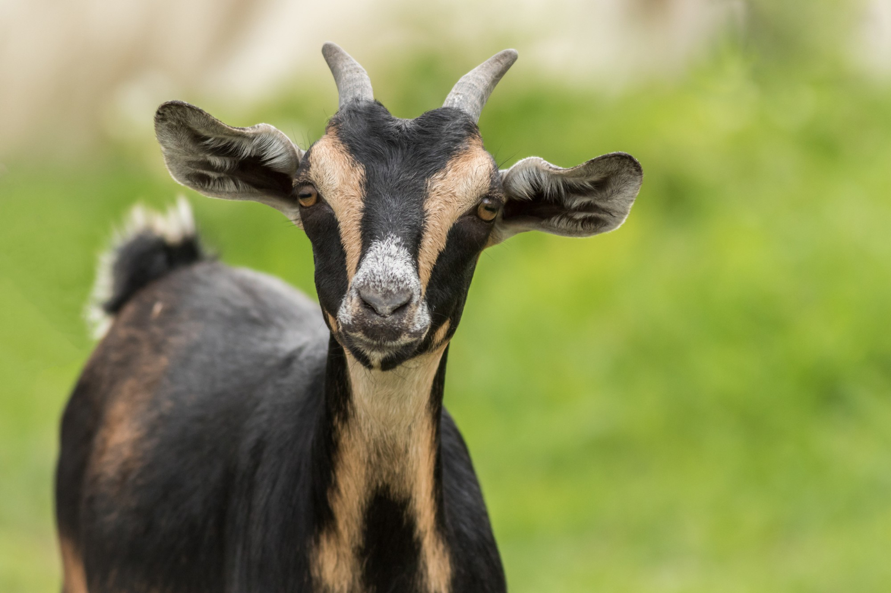

Goat

Goats: Versatile Companions of Agriculture Goats, members of the Capra genus, are intelligent and adaptable domesticated mammals known for their distinctive horns and cloven hooves. Renowned for thriving in diverse climates, goats serve various purposes, providing milk, meat (known as chevon or mutton), and luxurious fibers like Angora and Cashmere. With their playful and curious nature, goats make charming companions, often utilized for sustainable vegetation control and cherished as beloved pets or farm animals.Known for their curious and playful nature, goats are often depicted as friendly and entertaining animals. Their agile climbing abilities and tendency to explore their surroundings make them endearing to many people. Goats are also employed in sustainable agricultural practices for vegetation control, as they can efficiently graze on various plants and weedWhether found on a farm, in a rural setting, or as beloved pets, goats contribute to the livelihoods and well-being of communities globally, showcasing their remarkable versatility and significance in human culture.